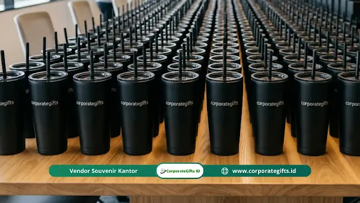

Corporate Gifts ID - Souvenir perpisahan kantor massal adalah kenang-kenangan yang dipesan dalam kuantitas banyak secara kolektif untuk dibagikan kepada seluruh jajaran karyawan dan tamu undangan dalam satu momen acara perpisahan (farewell party). Pilihan produk yang terbukti paling berkesan dan memiliki nilai guna tinggi mencakup tumbler vakum stainless steel custom, tote bag kanvas ramah lingkungan, buku agenda kerja, dan paket goodie bag tematik.
Ketika seorang eksekutif senior berpindah tugas atau instansi merayakan pelepasan purnatugas (pensiun), manajemen HR dituntut untuk menyiapkan souvenir kantor representatif yang mampu merefleksikan rasa terima kasih sekaligus menjaga tali silaturahmi seluruh tim kerja.
Poin Kunci Pengadaan Souvenir Perpisahan Massal:
- Efisiensi Anggaran (Tiered Pricing): Pemesanan dalam jumlah massal (bulk order) menurunkan biaya produksi satuan secara signifikan.
- Tingkat Retensi Tinggi: Riset industri menunjukkan 76% merchandise kantor fungsional disimpan dan digunakan rutin lebih dari 6 bulan.
- Keseragaman Visual: Menjamin seluruh karyawan menerima cinderamata dengan mutu dan standar kemasan yang setara.
- Pencegahan Risiko Keterlambatan: Memesan 3-4 minggu sebelum hari perpisahan memberikan waktu memadai untuk sampling dan uji mutu.
Memahami Definisi dan Kebutuhan Souvenir Perpisahan Massal
Berbeda dari hadiah perpisahan perorangan yang menitikberatkan pada kustomisasi nama tunggal, souvenir massal berfokus pada keseragaman desain, keandalan kualitas bahan, dan keterjangkauan anggaran unit tanpa mengorbankan estetika.
Kebutuhan ini umumnya dikelola oleh tim Human Capital atau panitia kepanitiaan acara di perusahaan menengah hingga konglomerasi besar. Melalui souvenir custom bertema khusus, setiap individu yang hadir merasa dihargai kontribusinya dalam perjalanan karier bersama.
Rekomendasi Produk Souvenir Perpisahan Massal Paling Efektif
Berikut adalah lima produk souvenir farewell massal yang paling sering dipilih karena keawetannya dalam pemakaian jangka panjang:
1. Tumbler Stainless Steel atau Botol Minum BPA-Free
Tumbler berbahan baja tahan karat SUS 304 dengan isolasi double wall vakum merupakan opsi utama. Dilengkapi ukiran grafir laser logo instansi dan tanggal perpisahan, tumbler ini akan digunakan setiap hari di meja kerja maupun saat berolahraga.

Kombinasi tumbler vacuum dan notebook agenda berlogo untuk cinderamata perpisahan kantor yang fungsional.
2. Tote Bag Kanvas Ramah Lingkungan
Tas kain kanvas katun tebal (10-12 oz) dengan sablon presisi membawa pesan kepedulian lingkungan (eco-friendly). Sangat serbaguna untuk membawa laptop, dokumen rapat, hingga keperluan belanja harian.
3. Notebook Custom Hardcover dengan Pesan Manajemen
Buku catatan bersampul keras kulit PU dengan teknik cetak deboss emas memberikan kesan formal dan berkelas. Anda dapat menyisipkan kata sambutan atau quote inspiratif dari jajaran pimpinan pada halaman pembuka.
4. Paket Goodie Bag Tematik Farewell
Kombinasi 2 atau 3 item esensial ke dalam satu kemasan goodie bag perusahaan yang menarik, misalnya tumbler mini, gantungan kunci kulit, pulpen metal, dan kartu ucapan terima kasih.
5. Set Pulpen Metal Eksklusif dalam Kotak Cetak Logo
Pilihan klasik bagi instansi yang mengedepankan kesan profesionalitas murni. Pulpen metal dengan mekanisme putar (twist pen) berbobot mantap dalam kemasan box beludru.
5 Langkah Memesan Souvenir Massal Secara Efisien
Untuk memastikan alur pengadaan berjalan lancar tanpa kendala tenggat waktu yang ketat, terapkan lima tahapan sistematis berikut:
- Tentukan Jumlah Kebutuhan dan Stok Cadangan: Hitung daftar hadir final dan selalu tambahkan 5% hingga 10% kuota cadangan untuk mengantisipasi penambahan tamu mendadak.
- Pilih Produk yang Mengutamakan Fungsi Harian: Hindari produk pajangan yang rentan rusak; pilih produk yang mendukung mobilitas kerja.
- Wajib Meminta Sampel Fisik (Proofing Sample): Evaluasi langsung ketajaman warna logo dan kehalusan jahitan/finishing sebelum proses produksi ribuan pcs dimulai.
- Finalisasi Desain Format Vektor: Sediakan file logo berformat AI, EPS, atau PDF beresolusi tinggi guna mempermudah proses cetak workshop.
- Monitoring Timeline Produksi & Logistik: Pantau jadwal penyelesaian bertahap bersama tim vendor terpercaya.
Tabel Matriks Pilihan Produk dan Estimasi Biaya Bulk Order
Berikut estimasi perkiraan anggaran pengadaan souvenir perpisahan massal per unit berdasarkan jenis produk dan volume pemesanan:
| Kategori Souvenir Massal | Rekomendasi Spesifikasi Item | Estimasi Harga Satuan | Keunggulan Utama |
|---|---|---|---|
| Tumbler Vakum SUS 304 | Kapasitas 500 ml, double wall, grafir laser logo | Rp45.000 - Rp75.000 | Dipakai setiap hari, retensi panas dingin 12 jam |
| Tote Bag Kanvas Premium | Bahan kanvas katun 10 oz, resleting, sablon 2 warna | Rp30.000 - Rp50.000 | Ramah lingkungan, muat laptop dan dokumen kantor |
| Buku Agenda Kulit PU | Cover kulit sintetis deboss logo, kertas bookpaper 80 gsm | Rp35.000 - Rp60.000 | Kesan eksekutif mewah dengan halaman catatan meeting |
| Goodie Bag Bundling | Tumbler mini + pulpen metal + pouch spunbond + greeting card | Rp55.000 - Rp90.000 | Paket lengkap yang siap diserahkan saat acara |
Faktor Penentu Harga dan Kesalahan Umum yang Harus Dihindari
Beberapa aspek yang menentukan total biaya pengadaan meliputi jenis bahan baku, jumlah pemesanan (semakin banyak volume, semakin hemat biaya unit), kompleksitas warna cetak, serta opsi kemasan kotak individual.
Hindari kesalahan umum seperti memesan tanpa stok cadangan, melewatkan tahapan sampel fisik, atau memilih desain yang terlalu padat sehingga merusak kejelasan logo pada media berukuran kecil.
Kesimpulan dan Solusi Pengadaan
Souvenir perpisahan kantor massal yang tepat akan menjadi jembatan kenangan yang terus merekatkan hubungan personal antar-rekan kerja kendati telah berpisah tempat pengabdian.
Wujudkan paket cinderamata perpisahan kantor terbaik bersama CorporateGifts.ID. Dapatkan penawaran harga grosir khusus dan desain mockup digital cuma-cuma melalui formulir permintaan penawaran harga B2B sekarang juga.